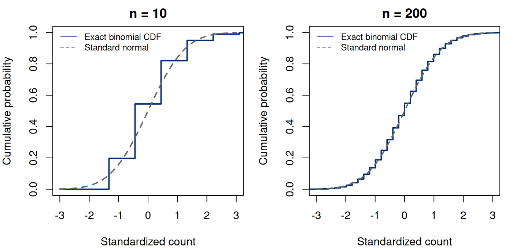

Notes on Statistical Inference
Chapter 5. Sampling limits and asymptotic approximations
The earlier probability, likelihood, and loss calculations let us compare procedures without treating a large sample as a universal remedy. The event count gave an exact likelihood, an unbiased estimate, and a sufficient statistic. Those calculations become harder when a target is a nonlinear function of many parameters or when a likelihood must be optimized numerically. Large-sample theory supplies a common language for such problems. To use it, we specify what approaches a limit, what remains fixed, and which assumptions support the approximation.
Return to the one-year event probability in the population defined in Chapter 1. If a study grew from ten to two hundred independent, completely observed people, what would improve? The sample proportion would concentrate around the same target. Its error would usually become smaller. A suitably scaled error would approach a stable distribution. These are distinct statements. This chapter develops them in that order, then uses exact binomial calculations to inspect how much a limiting argument tells us at a particular sample size.
The core material is consistency, the ordinary independent-sample central limit theorem, Slutsky’s theorem, and the first-order delta method. Second-order limits and changing-parameter sequences are advanced extensions. They reveal why a normal approximation can fail even when an estimator is consistent. The argument builds on expectations and variances from Chapter 1; the characteristic-function outline can be read after the central limit theorem’s statement without interrupting the applied examples.
5.1 A sequence of experiments needs a fixed target
For each positive integer , let be independent Bernoulli observations and let (5.1) We add a subscript when comparing sample sizes; within one experiment we still write and . Unless stated otherwise, is fixed as increases. The distribution changes because there are more observations, not because the population’s event probability changes.
An estimator of a target is consistent at if (5.2) This is convergence in probability, written . Consistency describes the probability of an error exceeding any fixed tolerance. It does not require that every realized sequence of estimates improve monotonically, that finite-sample bias vanish exactly, or that a confidence interval have its advertised coverage.
From Chapter 1, and . Chebyshev’s inequality gives the elementary proof (5.3) The last bound is uniform over . It establishes uniform consistency for this absolute-error criterion. It is usually a loose numerical bound: with and , its upper bound is one and conveys no useful finite-sample guarantee. A valid limit argument need not be a sharp planning formula.
More generally, if an estimator has bias tending to zero and variance tending to zero, then its mean squared error tends to zero, and Markov’s inequality applied to squared error establishes consistency. The converse is false without additional conditions. Rare, very large errors can have negligible probability but a large second moment. Therefore an observed decline in typical error does not establish convergence of expected loss. This distinction will matter when comparing procedures under loss functions that heavily penalize tails.
5.2 What different convergence statements permit
Concentration around a target does not yet describe the shape of the remaining error. We need a distributional statement for that task, and we must distinguish it from convergence of the variables themselves. Convergence in distribution, , means that tends to at each continuity point of the limiting cumulative distribution. It concerns distributions, not closeness of two variables on individual repetitions. If is standard normal and for even but for odd , every has the same normal distribution. Yet does not converge in probability to : along odd indices, has a positive probability of exceeding a small tolerance.
Almost-sure convergence is stronger. It requires convergence along the realized sequence outside a probability-zero set. Almost-sure convergence implies convergence in probability, which implies convergence in distribution. Convergence in distribution to a constant also implies convergence in probability to that constant. A general nonconstant limit does not give the reverse implication. These relationships are the reason that a law of large numbers can support substitution of an estimated denominator, whereas a distributional limit alone generally cannot.
Two tools connect the statements. The continuous mapping theorem says that continuous transformations preserve an appropriate convergence statement. If and is continuous at , then . Slutsky’s theorem says that if and for a constant , then sums and products have the corresponding limits, and if . The variables need not be independent.
The constant limit is what lets us replace the denominator without needing a new joint distribution. If both numerator and denominator merely have distributional limits, their joint dependence can affect the ratio. A marginal normal limit for each of two quantities does not establish a normal limit for their difference. When in doubt, write the joint experiment and the relevant joint convergence rather than combining separate software summaries.
5.3 A central limit theorem describes scaled error
Suppose are independent and identically distributed, with mean and variance . The ordinary central limit theorem states (5.4) The limit distribution is fixed. We do not write convergence to , whose variance changes with the index. For finite , that changing normal distribution can be an approximation to the distribution of ; it is not the fixed object on the right side of a convergence statement.
A short proof outline makes the role of finite variance visible. For , let in the characteristic function; this local use is distinct from an observation index. Near zero it satisfies (5.5) The linear term vanishes because , and the quadratic term uses . Independence makes the characteristic function of equal to , which tends to . The continuity theorem for characteristic functions completes the distributional argument. This outline is not a finite-sample error bound; proving a rate requires stronger moment assumptions and further work.
For the binary experiment at fixed , (5.6) At or , the observations are constant and the denominator is zero. The regular normal statement does not apply. Even for an interior probability, the count is discrete at every finite sample size. Its cumulative distribution has jumps, while the normal cumulative distribution is continuous.


5.4 Exact computation audits an approximation
Rather than decide that a conventional sample-size rule is sufficient, evaluate the approximation for a question that matters. For a count threshold , the exact probability is . A continuity-corrected approximation is (5.7) The half-unit correction aligns an integer cutoff with a continuous boundary. It does not change the model, eliminate skewness, or turn the expression into an exact probability. Tail questions, central quantiles, and two-sided coverage may have different approximation errors.
The R function below checks a raw cumulative-distribution distance at both sides of every binomial jump. Looking only at the right endpoints can miss the largest discrepancy with a continuous distribution. It separately checks corrected probabilities at integer thresholds; that is a different error criterion and is labelled accordingly.
Run the complete R example
Dependencies: base R. This complete block includes the data, setup and calculations. Run it in a fresh R session. Short code excerpts above explain individual steps; this block supplies their shared setup. Figures and tables are written to a temporary directory.
Complete R example
# Complete R example. Synthetic data; no external files are required.
local({
previous.directory <- getwd()
example.directory <- tempfile("biomedical-example-")
dir.create(example.directory)
setwd(example.directory)
on.exit(setwd(previous.directory))
dir.create("generated",showWarnings=FALSE)
# finite-binomial checks of asymptotic arguments.
out <- "generated"; out.dir <- out
dir.create(out,recursive=TRUE,showWarnings=FALSE)
# Check CDFs at all jumps, including the left limit of each jump.
clt.error <- function(n, p) {
k <- 0:n
z <- (k - n*p)/sqrt(n*p*(1-p))
right <- pbinom(k, n, p)
left <- pbinom(k-1, n, p)
d <- max(abs(right-pnorm(z)), abs(left-pnorm(z)))
threshold <- -1:n
cc <- pnorm((threshold+0.5-n*p)/sqrt(n*p*(1-p)))
data.frame(n=n, p=p, expected.events=n*p,
raw.cdf.error=d, corrected.threshold.error=max(abs(pbinom(threshold,n,p)-cc)))
}
summary <- do.call(rbind, lapply(c(0.01,0.15,0.5), function(p)
do.call(rbind,lapply(c(10L,50L,200L), clt.error,p=p))))
write.csv(summary,file.path(out,"ch07-normal-approximation.csv"),row.names=FALSE)
# Reader data: exact and approximate probabilities use one common count grid.
reader <- do.call(rbind,lapply(c(.01,.05,.15,.5),function(p)
do.call(rbind,lapply(c(10L,25L,50L,100L,250L),function(n) {
k <- 0:n
data.frame(n=n,p=p,k=k,z=(k-n*p)/sqrt(n*p*(1-p)),
exact.mass=dbinom(k,n,p),exact.cdf=pbinom(k,n,p),
normal.cdf=pnorm((k-n*p)/sqrt(n*p*(1-p))),
corrected.cdf=pnorm((k+.5-n*p)/sqrt(n*p*(1-p))))
}))))
write.csv(reader,file.path(out,"ch07-reader-distribution.csv"),row.names=FALSE)
# A rare-event sequence has np_n fixed, not a fixed interior p.
rare <- do.call(rbind,lapply(c(10L,50L,200L,1000L),function(n) {
k <- 0:max(n,20L)
data.frame(n=n,p=2/n,zero.probability=(1-2/n)^n,
poisson.zero=exp(-2),cdf.distance=max(abs(pbinom(k,n,2/n)-ppois(k,2))))
}))
write.csv(rare,file.path(out,"ch07-rare-events.csv"),row.names=FALSE)
# A delta-method computation tied to the recurring observed binary study.
n.obs <- 10L; k.obs <- 2L; q.obs <- k.obs/n.obs
logit.estimate <- qlogis(q.obs)
logit.se <- 1/sqrt(n.obs*q.obs*(1-q.obs))
stopifnot(abs(logit.estimate-log(.25))<1e-12,abs(logit.se-sqrt(.625))<1e-12)
write.csv(data.frame(n=n.obs,k=k.obs,estimate=logit.estimate,se=logit.se),
file.path(out,"ch07-logit.csv"),row.names=FALSE)
# Independent simulation of standardized means and a second-order target.
set.seed(602807)
b <- 100000L
sim <- do.call(rbind,lapply(c(10L,50L,200L),function(n) {
k <- rbinom(b,n,.15)
z <- (k/n-.15)/sqrt(.15*.85/n)
centered.square <- n*(rbinom(b,n,.5)/n-.5)^2
data.frame(n=n,replications=b,z.mean=mean(z),z.variance=var(z),
z.upper.tail=mean(z>qnorm(.975)),
square.mean=mean(centered.square),
square.upper.tail=mean(centered.square>.25*qchisq(.95,1)))
}))
write.csv(sim,file.path(out,"ch07-simulation.csv"),row.names=FALSE)
# Exact calculations distinguish Monte Carlo noise from approximation error.
second <- do.call(rbind,lapply(c(10L,50L,200L),function(n) {
k <- 0:n
w <- dbinom(k,n,.5)
t <- n*(k/n-.5)^2
data.frame(n=n,exact.mean=sum(w*t),
exact.upper.tail=sum(w[t>.25*qchisq(.95,1)]))
}))
stopifnot(max(abs(second$exact.mean-.25))<1e-10)
stopifnot(max(abs(summary$raw.cdf.error))<1)
stopifnot(all(diff(rare$zero.probability)>0))
stopifnot(all(rare$zero.probability<exp(-2)))
write.csv(second,file.path(out,"ch07-second-order.csv"),row.names=FALSE)
# A normal-model efficiency audit for an odd-sample median.
set.seed(602817)
median.b <- 20000L; median.n <- 101L
normal.samples <- matrix(rnorm(median.b*median.n),nrow=median.b)
means <- rowMeans(normal.samples)
medians <- apply(normal.samples,1L,median)
median.check <- data.frame(n=median.n,replications=median.b,
scaled.mean.variance=median.n*var(means),
scaled.median.variance=median.n*var(medians),
limiting.mean.variance=1,limiting.median.variance=pi/2)
write.csv(median.check,file.path(out,"ch07-median.csv"),row.names=FALSE)
stopifnot(abs(median.check$scaled.mean.variance-1)<.08,
abs(median.check$scaled.median.variance-pi/2)<.12)
tex.table <- function(dat,path,digits=4) {
lines <- c(paste0("\\begin{tabular}{",paste(rep("r",ncol(dat)),collapse=""),"}\\toprule"),
paste0(paste(gsub("_"," ",names(dat)),collapse=" & ")," \\\\ \\midrule"))
for(i in seq_len(nrow(dat))) lines <- c(lines,
paste0(paste(formatC(as.numeric(unlist(dat[i,])),format="f",digits=digits),collapse=" & ")," \\\\"))
writeLines(c(lines,"\\bottomrule\\end{tabular}"),path)
}
tex.table(summary[c("n","p","expected.events","raw.cdf.error","corrected.threshold.error")],
file.path(out,"ch07-normal-approximation.tex"))
tex.table(rare[c("n","zero.probability","poisson.zero","cdf.distance")],
file.path(out,"ch07-rare-events.tex"))
second.table <- data.frame(n=second$n,exact.tail=second$exact.upper.tail,
simulated.tail=sim$square.upper.tail,
simulation.mcse=sqrt(sim$square.upper.tail*(1-sim$square.upper.tail)/b))
tex.table(second.table,file.path(out,"ch07-second-order.tex"),digits=6)
writeLines(c("\\begin{tabular}{lrr}\\toprule",
"Estimator & Simulated $n$-scaled variance & Limiting variance \\\\ \\midrule",
sprintf("Mean & %.6f & %.6f \\\\",median.check$scaled.mean.variance,1),
sprintf("Median & %.6f & %.6f \\\\",median.check$scaled.median.variance,pi/2),
"\\bottomrule\\end{tabular}"),file.path(out,"ch07-median.tex"))
plot.cdf <- function() {
par(mfrow=c(1,2),mar=c(4,4,2,1))
for(n in c(10L,200L)) {
p <- .15; k <- 0:n; z <- (k-n*p)/sqrt(n*p*(1-p))
# Extend the step CDF through the support endpoints to show both tails.
xplot <- c(min(-3,z[1]-1),z,max(3,z[length(z)]+1))
cdf <- c(0,pbinom(k,n,p),1)
plot(xplot,cdf,type="s",xlim=c(-3,3),ylim=c(0,1),
xlab="Standardized count",ylab="Cumulative probability",main=paste("n =",n),
col="#002D72",lwd=2)
curve(pnorm(x),add=TRUE,col="#666666",lty=2,lwd=2)
legend("topleft",c("Exact binomial CDF","Standard normal"),
col=c("#002D72","#666666"),lty=c(1,2),bty="n",cex=.8)
}
}
cairo_pdf(file.path(out,"ch07-clt.pdf"),width=7,height=3.4); plot.cdf(); dev.off()
png(file.path(out,"ch07-clt.png"),width=1400,height=680,res=180); plot.cdf(); dev.off()
capture.output(sessionInfo(),file=file.path(out,"ch07-session-info.txt"))
print(summary); print(rare); print(sim); print(second)
# An exact order-statistic CDF and its local median limit.
median.cdf <- do.call(rbind,lapply(c(101L,1001L,10001L),function(nn) {
t <- c(-1,0,1); q <- pnorm(t/sqrt(nn))
data.frame(n=nn,t=t,
exact=pbinom((nn-1)/2,nn,q,lower.tail=FALSE),
limit=pnorm(2*dnorm(0)*t))
}))
stopifnot(all(abs(median.cdf$exact[median.cdf$t==0]-.5)<1e-12))
write.csv(median.cdf,file.path(out,"ch07-median-cdf.csv"),row.names=FALSE)
print(median.cdf)
cat("\nSelected numerical results\n")
for (candidate in c("reader", "summary", "summary.mc", "perf", "comparison", "route.comparison", "test", "tab", "exact", "workflow.ci", "coef.tab", "evaluation.table")) {
if (exists(candidate, inherits=FALSE)) {
value <- get(candidate, inherits=FALSE)
if (is.data.frame(value) || is.matrix(value)) { cat(candidate, "\n"); print(utils::head(value,8)) }
}
}
cat("R", as.character(getRversion()), "\n")
})
This excerpt shows a step inside the preceding complete R example; it uses that block’s data and setup.
clt.error <- function(n, p) {
k <- 0:n
z <- (k - n*p)/sqrt(n*p*(1-p))
right <- pbinom(k, n, p)
left <- pbinom(k-1, n, p)
d <- max(abs(right-pnorm(z)), abs(left-pnorm(z)))
threshold <- -1:n
cc <- pnorm((threshold+0.5-n*p)/sqrt(n*p*(1-p)))
data.frame(n=n, p=p, expected.events=n*p,
raw.cdf.error=d, corrected.threshold.error=max(abs(pbinom(threshold,n,p)-cc)))
}
summary <- do.call(rbind, lapply(c(0.01,0.15,0.5), function(p)
do.call(rbind,lapply(c(10L,50L,200L), clt.error,p=p))))| n | p | expected events | raw cdf error | corrected threshold error |
|---|---|---|---|---|
| 10.0000 | 0.0100 | 0.1000 | 0.5291 | 0.0283 |
| 50.0000 | 0.0100 | 0.5000 | 0.3664 | 0.1050 |
| 200.0000 | 0.0100 | 2.0000 | 0.1767 | 0.0435 |
| 10.0000 | 0.1500 | 1.5000 | 0.2153 | 0.0443 |
| 50.0000 | 0.1500 | 7.5000 | 0.0972 | 0.0188 |
| 200.0000 | 0.1500 | 30.0000 | 0.0485 | 0.0092 |
| 10.0000 | 0.5000 | 5.0000 | 0.1230 | 0.0027 |
| 50.0000 | 0.5000 | 25.0000 | 0.0561 | 0.0005 |
| 200.0000 | 0.5000 | 100.0000 | 0.0282 | 0.0001 |
At , increasing makes the standardized count look more nearly normal. At , even two hundred people provide only two expected events. An apparently large number of records can therefore coexist with little information about a rare outcome. The relevant precision depends on the event probability and the statistical target, not just the row count. The table reports the calculated errors, and the complete R example reproduces them directly rather than requiring us to infer their size from a plot.
These calculations assume a known generating for an audit. In an actual study, is unknown. They therefore illustrate possible performance across model settings rather than certifying the approximation at the unknown truth. Simulation from the fitted model can show behavior under that model; it cannot verify independence, measurement accuracy, or transport from the sampled population to the target population.
5.5 Studentization changes the denominator, not the target
To use a normal limit for inference, we must generally estimate its variance. Consistency and continuous mapping give . For fixed interior , Slutsky’s theorem therefore gives (5.8) Define the ratio arbitrarily at the samples if necessary; their combined probability tends to zero. This asymptotic convention does not make division by zero acceptable in finite-sample software. A program must choose and report a finite-sample procedure at those outcomes.
The distinction between true and estimated variance is easy to overlook. Equation (5.6) concerns a known denominator at a model value. Equation (5.8) concerns a random denominator calculated from the same observations. Slutsky justifies their shared limiting distribution for fixed interior , but their finite-sample distributions differ. Chapter 6 will show that the resulting Wald confidence interval can have poor coverage near the boundary.
A stable standard error also does not repair dependence. If all observations share an unmodelled environmental effect, contains covariance terms. Substituting then estimates the variance of a different experiment. Before improving a normal approximation, verify that the variance formula represents the actual sampling unit.
5.6 The delta method carries an estimand through a transformation
The previous calculation kept the target on the probability scale. If the scientific target is a transformation, such as log odds, its error must be put on that new scale too. A local expansion tells us how the original estimation error propagates. Let be fixed, let for finite , and suppose is defined on a neighborhood of and differentiable there at . The distributional limit makes bounded in probability and implies . Differentiability gives the deterministic remainder representation Substitute . The random remainder satisfies , and multiplying it by a quantity bounded in probability still gives a term tending in probability to zero. Thus (5.9) and hence (5.10) The asymptotic variance is the original variance multiplied by the squared local slope. When , the transformation retains a nondegenerate first-order limit if . When , the displayed limit is concentrated at zero and a different scale may be needed. A consistent plug-in slope can support a standard error after the limiting argument has identified the target and scale.
For the log odds , . Combining this derivative with equation (5.6) gives asymptotic variance for the scaled log-odds error. Thus an approximate standard error is (5.11) For , the observed log odds are and this standard error is . The transformation respects a probability range when an interval is transformed back, but the approximation still rests on a small, interior-information experiment.
This excerpt shows a step inside the preceding complete R example; it uses that block’s data and setup.
n.obs <- 10L; k.obs <- 2L; q.obs <- k.obs/n.obs
logit.estimate <- qlogis(q.obs)
logit.se <- 1/sqrt(n.obs*q.obs*(1-q.obs))
stopifnot(abs(logit.estimate-log(.25))<1e-12,abs(logit.se-sqrt(.625))<1e-12)
write.csv(data.frame(n=n.obs,k=k.obs,estimate=logit.estimate,se=logit.se),
file.path(out,"ch07-logit.csv"),row.names=FALSE)The ordinary sample log odds are infinite at or . A first-order asymptotic result does not give this unmodified statistic a finite expectation. In particular, a casual second-order Taylor calculation cannot establish its finite-sample bias. One may define a boundary extension or use a different estimator, but that new finite-sample rule must be named and evaluated. For a fixed interior , any finite boundary extension leaves the distributional limit unchanged because those boundary samples become improbable.
5.7 When the first derivative vanishes
Consider a measure of departure from an event probability of one half, (5.12) Away from , first-order delta reasoning gives a normal scaled error with variance . At , that variance is zero. The conclusion is that the square-root- fluctuation vanishes, not that the estimator is known exactly.
Here the algebra supplies the next scale directly: (5.13) The limit is nonnegative and asymmetric. At every , its exact expectation under is . The script checks this identity by finite summation and independently simulates the upper-tail probability. An exact moment agreement does not imply that all quantiles already agree with the limiting law.
| n | exact tail | simulated tail | simulation mcse |
|---|---|---|---|
| 10.000000 | 0.021484 | 0.021570 | 0.000459 |
| 50.000000 | 0.064909 | 0.065410 | 0.000782 |
| 200.000000 | 0.055966 | 0.056370 | 0.000729 |
This is an advanced extension of the second-order delta method. It also explains a practical diagnostic: before deriving a normal standard error for a transformed target, evaluate the derivative at scientifically relevant parameter values. A zero derivative is a structural change in the approximation, not a reason to report a zero-width uncertainty interval. Close to such values, a first-order approximation may be unstable even if the derivative is not exactly zero.
5.8 A quantile has a different source of precision
The central limit theorem for a mean is not the only route to a normal approximation. Suppose are independent and identically distributed from a continuous distribution with unique median , distribution function , and a density continuous and positive at . For an odd sample size let be the middle order statistic. The event is the event that at least observations are at or below . Independence and the common distribution make that count binomial with probability .
To inspect a local departure, set and . Differentiability gives . If counts observations at or below , its standardized threshold satisfies Here , so the binomial standardized-count limit remains normal: the bounded Bernoulli summands satisfy the triangular-array central limit conditions. Taking the upper tail of this count gives Consequently, (5.14) The sample median’s uncertainty depends on the density near the population median. A flatter distribution there means that a small change in probability corresponds to a larger change in the quantile. The positivity and continuity assumptions are essential: an atom, a flat interval of medians, or zero density at the target can change the limiting argument.
For a standard normal sample, the exact CDF at one point on the scaled-median axis can be evaluated without simulating order statistics. At , the count probability is ; the median event is an upper binomial tail:
This excerpt shows a step inside the preceding complete R example; it uses that block’s data and setup.
n <- c(101,1001)
q <- pnorm(1/sqrt(n))
pbinom((n-1)/2,n,q,lower.tail=FALSE)
# 0.7880877, 0.7875874
pnorm(2*dnorm(0)) # 0.7875313: limiting CDFThe difference from the limit decreases here. This calculation tests the order-statistic argument on its own target, rather than applying a mean standard error to a median.
For normal observations with mean and variance , and . The median’s asymptotic variance is , whereas the mean’s is . Under this exact normal model the mean has greater asymptotic precision. The complete R example simulates twenty thousand samples of size 101 from a standard normal model and records times the empirical variances of the two estimators alongside their limits. It uses the same sample for each pair of estimates, preserving a meaningful comparison.
| Estimator | Simulated -scaled variance | Limiting variance |
|---|---|---|
| Mean | 0.991130 | 1.000000 |
| Median | 1.544932 | 1.570796 |
Under a different distribution, the comparison can change. A standard Cauchy sample has no finite mean or variance, and its average remains standard Cauchy rather than concentrating. Its median nevertheless has target zero and satisfies the quantile limit because the density at zero is . The median’s scaled variance limit is then . This contrast concerns both the existence of the statistical target and the precision of its estimator; an ideal-normal-model efficiency calculation addresses only the latter. Establish a common target and the necessary moments before ranking estimators by variance.
5.9 Rare-event sequences ask a different question
Suppose now that the population itself changes with sample size so that . The estimator still estimates its own experiment’s probability, but the expected count remains two. The probability-generating function is (5.15) which identifies a Poisson limit for the count. In particular, (5.16) The standardized count approaches a standardized Poisson variable, not a standard normal variable. A plug-in variance remains zero on a nonvanishing fraction of samples. There is no contradiction with the fixed- central limit theorem; its premise was changed.
| n | zero probability | poisson zero | cdf distance |
|---|---|---|---|
| 10.0000 | 0.1074 | 0.1353 | 0.0302 |
| 50.0000 | 0.1299 | 0.1353 | 0.0055 |
| 200.0000 | 0.1340 | 0.1353 | 0.0014 |
| 1000.0000 | 0.1351 | 0.1353 | 0.0003 |
This extension helps distinguish more follow-up from more information about a rare target. It does not imply that all rare-event studies have a Poisson model. A fixed small eventually yields many events as grows; a sequence with bounded does not. In practice, inspect event counts, parameter boundaries, and the specific target before invoking an asymptotic approximation.
5.10 From a limit argument to a defensible analysis
The complete R example first enumerates finite distributions, then uses simulation as an independent check. With seed 602807 it generates 100,000 counts for each of three sample sizes. It computes standardized means and second-order statistics from each count, rather than drawing a normal variable and claiming to have tested the central limit theorem. Monte Carlo error concerns the simulated average; approximation error concerns the difference between the exact finite law and the proposed normal or chi-square law. These must not share one unexplained error bar.
Unbiasedness controls a mean, and consistency controls concentration around a target. Neither gives a normal error distribution by itself. To obtain one, we specify a scale and verify the central limit theorem’s conditions. For a transformed target, we also check the derivative and remainder. Boundary and changing-probability experiments show why no fixed sample-size cutoff can replace those steps.
We can now move from a limit statement to an uncertainty procedure: identify the target, derive its scaled error, justify the estimated variance, and examine finite-sample behavior. The confidence-set chapter uses these steps to choose endpoints while keeping their repeated-sampling coverage distinct from the approximation used to construct them.
5.11 Exercises
Concentration and expected loss. For independent identically distributed Bernoulli observations, , prove uniform consistency of by bounding for every . Construct a sequence with in probability but . State the implication for interpreting consistency under squared-error loss.
A random denominator can vanish. For at fixed , derive the standard-normal limit of the studentized proportion when its denominator is nonzero. Define the statistic arbitrarily on zero-denominator outcomes for the asymptotic statement. Derive their exact probability, evaluate it at and , and explain why the arbitrary definition is not a finite-sample inference guarantee.
Transformations change the error scale. Under the fixed-interior Bernoulli model, derive the asymptotic variances of and . For the latter limit, define a finite value on counts zero and . Explain separately what happens at a true and why the unmodified finite-sample log odds have no ordinary finite expectation at any interior .
A growing sample with a bounded event count. For fixed and integers , let . Derive the limiting count distribution from its probability-generating function, the limiting probability of zero events, and the limiting distribution of . Explain why this does not contradict the fixed-interior-probability CLT.